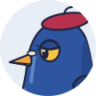

A2 · 18. nodaļa · Tromsø
18
Under nordlyset
Zem ziemeļblāzmas
{{scenes/u18.svg}}
Šajā nodaļā tu iemācīsies
- runāt par ziemu, debesīm un ainavu;
- prievārdus til, fra, med, uten, hos, om;
- i vai på ar vietu nosaukumiem;
- virziens vai vieta: hjem / hjemme, ut / ute;
- kas ir polārā nakts mørketid.
{{maps/route-18.svg}}

Hei fra Tromsø! Šeit ir decembris, un saule vispār neuzlec — tā ir polārā nakts. Bet debesīs dejo zaļa gaisma: ziemeļblāzma! Haskijs Kira mani ved suņu kamanās prom no pilsētas gaismām.
✎ Manas piezīmes
Norsk med Polly · A2
18A
Ordforråd
Vārdu krājums: ziema un debesis
| nordlys | [ˈnu:rlü:s] | ziemeļblāzma |
| mørketid | [ˈmørketi:d] | polārā nakts |
| midnattssol | [ˈmidnatsu:l] | pusnakts saule |
| en himmel | [en ˈhimel] | debesis |
| ei/en stjerne | [æi ˈstjæ:rne] | zvaigzne |
| en måne | [en ˈmo:ne] | mēness |
| is | [i:s] | ledus |
| mørk / lys | [mørk / lü:s] | tumšs / gaišs |
| klar | [kla:r] | skaidrs |
| en horisont | [en huriˈsunt] | horizonts |
| ei/en vidde | [æi ˈvide] | kalnu plato |
| en hund | [en hun] | suns |
| hundekjøring | [ˈhuneçø:riŋ] | brauciens suņu pajūgā |
| å tenne lys | [o ˈtene lü:s] | iedegt sveces |
| å fryse | [o ˈfrü:se] | salt |
| å vente på | [o ˈvente po] | gaidīt (ko) |
0Ziema (V) vai vasara (S) Ziemeļnorvēģijā?
mørketid
midnattssol
nordlys
lyst hele natta
hundekjøring
is på sjøen
Atbildes: 1 V · 2 S · 3 V · 4 S · 5 V · 6 V
0Pretējais vārds. Ieraksti.
mørk ↔
kald ↔
natt ↔
vinter ↔
Atbildes: 1 lys · 2 varm · 3 dag · 4 sommer
✎ Manas piezīmes
18. nodaļa · Under nordlyset
18B
Les! Hundekjøring
Lasām: suņu kamanās
KiraHei! Skal du bli med på hundekjøring i kveld?
PollyJa! Jeg har aldri kjørt med hunder. Hvor skal vi?
KiraFra Tromsø og ut på vidda. Uten lys fra byen kan vi se nordlyset bedre.
PollyKommer nordlyset i kveld?
KiraKanskje. Det er klart vær og minus femten grader. Ta på deg ull under jakka!
PollyHvor lenge er det mørkt her om vinteren?
KiraI mørketida, fra slutten av november til midten av januar, kommer ikke sola over horisonten.
PollyHele dagen mørkt? Hva gjør dere da?
KiraVi tenner lys, går på kafé, kjører hund og venter på sola. Når den kommer tilbake, spiser vi solboller!
PollySe! Der er det! Grønt lys over fjellet!
å bli med [o bli: me:] — pievienoties, braukt līdziå kjøre [o ˈçø:re] — braukt, vadītuten [ˈu:ten] — bezå ta på seg [o ta: po sæi] — uzvilktslutten av [ˈšluten a:] — beigasmidten av [ˈmiten a:] — vidusei/en solbolle [æi ˈsu:lbole] — saules bulciņa
0Riktig eller galt? Pareizi (R) vai nepareizi (G)?
| 1. Pollijs jau daudzreiz ir braucis suņu pajūgā. | R / G |
| 2. Ārpus pilsētas ziemeļblāzma ir labāk redzama. | R / G |
| 3. Ārā ir plus piecpadsmit grādi. | R / G |
| 4. Polārā nakts ilgst no novembra beigām līdz janvāra vidum. | R / G |
| 5. Kad saule atgriežas, ēd saules bulciņas. | R / G |
Atbildes: 1 G (nekad) · 2 R · 3 G (mīnus) · 4 R · 5 R
0Ko tu darītu polārās nakts laikā? Uzraksti 3 teikumus.
I mørketida
Piemērs: I mørketida ville jeg tenne mange lys. Jeg ville gå på kafé med venner. Jeg ville se etter nordlyset hver kveld.
✎ Manas piezīmes
Norsk med Polly · A2
18C
Grammatikk
Gramatika: prievārdi
1. Biežākie prievārdi
| Prievārds | Nozīme | Piemērs |
|---|
| til | uz (virziens), līdz | Vi kjører til Tromsø. |
| fra | no | Polly kommer fra Riga. |
| med | ar | Hun kjører med hunder. |
| uten | bez | kaffe uten melk |
| hos | pie (kādam) | Jeg bor hos Pelle. |
| om | par; pēc (laika) | en bok om nordlys · om ti minutter |
| etter / før | pēc / pirms | etter middag · før frokost |
| gjennom | cauri | gjennom skogen |
2. i vai på ar vietām
i
pilsētas un valstis: i Tromsø, i Riga, i Norge
slēgtas telpas: i stua, i bilenpå
salas un daudzi ciemi: på Lofoten, på Røst, på Svalbard
aktivitātes un vietas: på jobb, på kino, på skolen, på kafé, på tur3. Virziens (kurp?) vai vieta (kur?)
| Kurp? (kustība) | Kur? (vieta) | Nozīme |
|---|
| hjem | hjemme | mājās |
| ut | ute | ārā |
| inn | inne | iekšā |
| opp | oppe | augšā |
| ned | nede | lejā |
Jeg går hjem. — Es eju mājās (uz mājām). Jeg er hjemme. — Es esmu mājās. Kom inn! Det er kaldt ute.
0Ieraksti i vai på.
- Kira bor Tromsø.
- Polly var Lofoten.
- Vi drikker kakao kafé.
- Svalbard ligger Norge, men vi bor ikke Svalbard.
- Jeg er jobb til klokka fire.
Atbildes: 1 i · 2 på · 3 på · 4 i, på · 5 på
✎ Manas piezīmes
18. nodaļa · Under nordlyset
0hjem/hjemme, ut/ute, inn/inne? Ieraksti.
- Klokka er ti. Jeg går nå.
- Er mamma ? — Nei, hun er på jobb.
- Det er minus tjue grader !
- Kom , du fryser!
- Hundene vil gå og løpe.
Atbildes: 1 hjem · 2 hjemme · 3 ute · 4 inn · 5 ut
0Ieraksti prievārdu: til, fra, med, uten, hos, om.
- Jeg drikker te sukker.
- Polly bor Pelle på Røst.
- Vi kjører Tromsø Alta.
- Han leser en bok nordlys.
- Kira kjører seks hunder.
Atbildes: 1 uten / med · 2 hos · 3 fra, til · 4 om · 5 med
18D
Les! Hva er nordlys?
Lasām: kas ir ziemeļblāzma?
Nordlyset kommer fra sola. Sola sender små partikler ut i verdensrommet. Når partiklene kommer til jorda, treffer de luften 100–300 kilometer over oss. Da begynner himmelen å lyse — oftest grønt, men noen ganger rødt eller lilla.
Du kan se nordlys i Nord-Norge fra september til mars. Du trenger mørke og klar himmel. Tromsø ligger midt under «nordlysovalen», så her er sjansen veldig god.
Før trodde folk at nordlyset var farlig. Barn fikk ikke vinke til det — da kunne nordlyset ta dem! Noen nordmenn sier det fortsatt for moro skyld.
partikler [parˈtikler] — daļiņasverdensrommet [ˈvæ:rdensrume] — kosmosså treffe [o ˈtrefe] — trāpītluften [ˈluften] — gaissoftest [ˈoftest] — visbiežāksjansen [ˈšansen] — iespējaå vinke [o ˈvinke] — mātfor moro skyld [for ˈmu:ru šül] — joka pēc
0Atbildi uz jautājumiem norvēģu valodā.
- Hvor kommer nordlyset fra?
- Hvilken farge har nordlyset oftest?
- Når kan du se nordlys i Nord-Norge?
- Hva trodde folk før?
Atbildes: 1 Det kommer fra sola. · 2 Grønt. · 3 Fra september til mars. · 4 At nordlyset var farlig / kunne ta barn.
✎ Manas piezīmes
Norsk med Polly · A2
☕
Som en nordmann
Diena kā norvēģim: polārā nakts un pusnakts saule
No novembra beigām līdz janvāra vidum Tromsē saule nepaceļas virs horizonta. Taču pilnīga tumsa nav: dienas vidū ir zilgana krēsla, un sniegs atspīd. Norvēģi aizdedz sveces visos logos un sauc šo laiku par omulīgu, nevis skumju.
Vasarā ir otrādi: no maija beigām līdz jūlija beigām saule nenoriet — midnattssol. Bērni spēlē futbolu pusnaktī, un daudzi guļ ar biezām aizkarēm. 21. janvārī, kad saule atgriežas, Tromsē ēd solboller — bulciņas ar vaniļas krēmu.
ei/en blåtime [æi ˈblo:ti:me] zilā stunda
gardiner [garˈdi:ner] aizkari
å gå ned [o go: ne:] noriet
å stå opp [o sto: op] uzlēkt (saulei)
0Vai tu varētu dzīvot polārajā naktī? Kāpēc? Uzraksti 2 teikumus.
Piemērs: Ja, jeg tror det. Jeg liker mørke kvelder med lys og bøker.
🧭
Vai zināji?
No Tromsē sākās daudzas Arktikas ekspedīcijas, tāpēc to sauc par „vārtiem uz Arktiku”. Tieši no šejienes 1928. gadā savā pēdējā lidojumā devās norvēģis Rūls Amundsens — pirmais cilvēks, kas sasniedza Dienvidpolu (1911). Pāri tiltam stāv trīsstūrainā Ishavskatedralen — Arktiskā katedrāle (1965), kas izskatās kā ledus kalns.18E
Skriv!
Rakstām
0Uzraksti pastkarti no Tromsē (4–5 teikumi): kur tu esi, ar ko, ko redzēji, kāds ir laiks. Lieto prievārdus.
Hei fra Tromsø!
Piemērs: Hei fra Tromsø! Jeg bor hos en venn i sentrum. I går kjørte vi med hunder ut på vidda. Vi så nordlyset over fjellet! Det er minus femten grader ute, men vi har det koselig inne.
✓
Sjekk deg selv
Pārbaudi sevi
Es zinu 14 vārdus par ziemu un debesīm.
Es protu lietot til, fra, med, uten, hos, om.
Es zinu, kad i un kad på ar vietām.
Es zinu atšķirību hjem / hjemme, ut / ute.
Es protu izskaidrot, kas ir ziemeļblāzma.
Es zinu, kas ir mørketid un midnattssol.
✎ Manas piezīmes